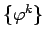
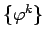
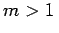

Chaos in eindimensionalen Abbildungen
Für stetige Abbildungen eines kompakten Intervalls in sich gibt es zahlreiche hinreichende Bedingungen für die Existenz chaotischer invarianter Mengen. Drei Beispiele sollen genannt werden.
- 1. Satz von Shinai:
- Sei
 eine stetige Abbildung eines kompakten Intervalls I (z.B. I = [0,1]) in sich. Dann ist das System  auf I genau dann chaotisch im Sinne von DEVANEY, wenn die topologische Entropie von
eine stetige Abbildung eines kompakten Intervalls I (z.B. I = [0,1]) in sich. Dann ist das System  auf I genau dann chaotisch im Sinne von DEVANEY, wenn die topologische Entropie von  auf I, d.h. , positiv ist.
auf I, d.h. , positiv ist.
- 2. Satz von Sharkovsky:
- Die positiven ganzen Zahlen seien folgendermaßen geordnet:
Sei  eine stetige Abbildung eines kompakten Intervalls in sich und habe auf I einen n-periodischen Orbit. Dann hat auch einen m-periodischen Orbit, wenn ist.
eine stetige Abbildung eines kompakten Intervalls in sich und habe auf I einen n-periodischen Orbit. Dann hat auch einen m-periodischen Orbit, wenn ist.
- 3. Satz von Block, Guckenheimer und Misiuriewicz:
- Sei eine stetige Abbildung des kompakten Intervalls I in sich, so daß einen 2n m-periodischen Orbit (, ungerade) besitzt. Dann ist .